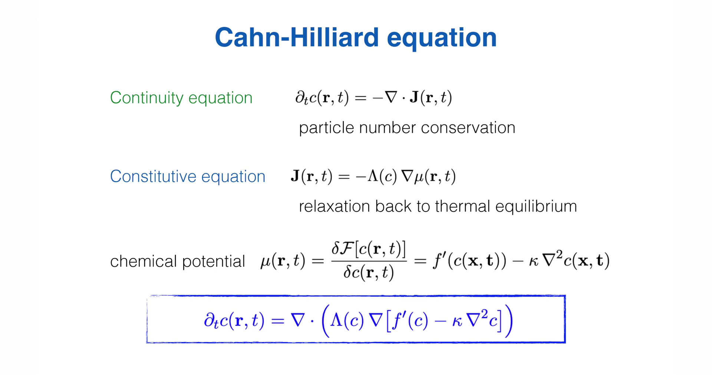
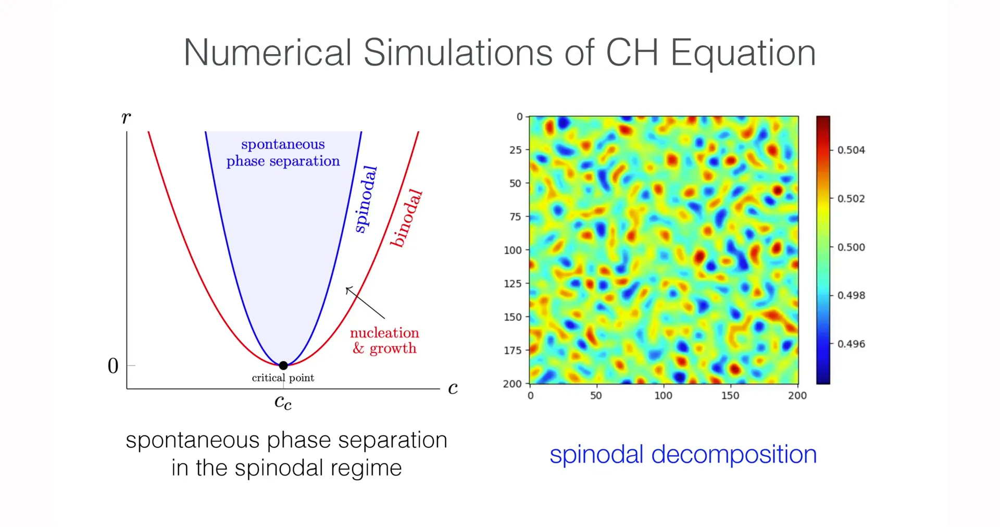
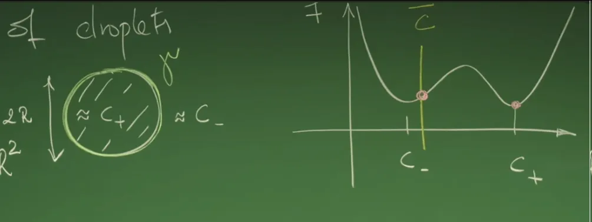
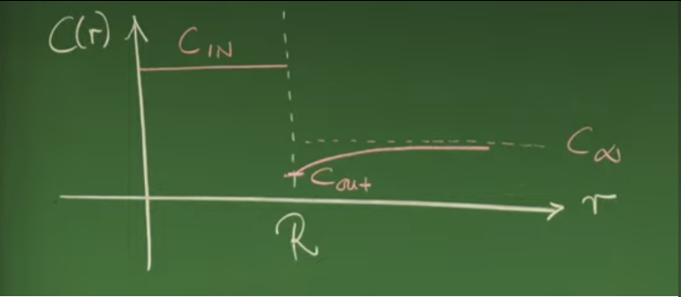

Introduction - From Spinodal Decomposition to Nucleation Theory - A Dynamical Turn¶
In Lecture 14, phase separation dynamics of liquid mixtures was systematically characterized within the continuous field theory framework of conserved order parameters through the Cahn–Hilliard equation (Model B). This equation takes the continuity equation as starting point, combining particle number conservation with Onsager transport relations in non-equilibrium thermodynamics, so that concentration field temporal evolution is driven by generalized chemical potential gradients. Within this framework, uniform states in thermodynamically unstable regions (spinodal region, \(f''(c)<0\)) are unstable to arbitrarily small fluctuations. Linear stability analysis reveals characteristic mode selection mechanism: perturbations within a finite wavenumber interval are exponentially amplified, with the fastest growing mode \(q_{\max}\) determining the characteristic scale of early-stage patterns. This mechanism corresponds to spinodal decomposition, whose core dynamical characteristic is "uphill diffusion," meaning matter spontaneously aggregates against concentration gradients. 

However, what the Cahn–Hilliard equation can describe in the linearized sense is limited to early stages of phase separation. As concentration fluctuation amplitudes increase, nonlinear effects inevitably dominate, and the system gradually evolves into enriched and depleted phase regions separated by interfaces. At this stage, relying solely on dispersion relations is insufficient to characterize dynamical processes; more importantly, the spinodal decomposition mechanism itself only applies to thermodynamically unstable regions. For metastable regions located between binodal and spinodal lines (\(f''(c)>0\)), uniform states are locally linearly stable, small perturbations are quickly suppressed, and Cahn–Hilliard's linear instability mechanism no longer applies. Phase separation in this region must be initiated through fundamentally different pathways.
![Lecture Slide Screenshot, Linear stability analysis of Cahn–Hilliard equation. Through linearization and Fourier analysis of small perturbations to uniform state, dispersion relation \(\sigma(q)=-\Lambda(\bar c)q^2[f''(\bar c)+\kappa q^2]\) is obtained. When \(f''(\bar c)<0\), unstable wavenumber interval exists with early structural scale selected by \(q_{\max}\); when \(f''(\bar c)>0\), uniform state is linearly stable and all small perturbations decay.](https://files.mdnice.com/user/129153/7c10e96b-2598-4b14-b4fd-87ce0b2ad68b.png)
Lecture 15 focuses precisely on this metastable region. Within this region, although the system has lower free energy phase-separated states, transitioning from initial uniform state to that state requires crossing a finite free energy barrier. Phase separation is no longer spontaneously triggered by infinitesimal fluctuations, but depends on finite-amplitude thermal fluctuations locally forming a high-concentration new phase embryo in the parent phase, i.e., droplet or nucleus. Only when the droplet size exceeds a certain critical value can volume free energy gain overcome interfacial energy cost, enabling spontaneous growth stage. This physical picture constitutes the starting point of Classical Nucleation Theory, also marking the paradigm shift in phase separation dynamics from linear instability to barrier control.
Unlike diffuse concentration waves in spinodal decomposition, nucleation process involves clear phase interfaces from the beginning. Therefore, interface is no longer merely a regulatory mechanism implicitly introduced through gradient terms in Cahn–Hilliard functional, but becomes a physical object with definite thermodynamic and mechanical meaning. Interfacial tension, curvature, and resulting pressure differences and chemical potential corrections become key factors determining droplet stability and evolution direction. This lecture will start from competition between free energy volume and surface terms, derive critical droplet radius and nucleation barrier; then introduce Laplace pressure, establishing mechanical equilibrium conditions for curved interfaces; on this basis, combining chemical potential continuity with osmotic pressure relations, obtain the famous Gibbs–Thomson relation, revealing how interface curvature systematically raises equilibrium concentration of small droplets.
After completing interface thermodynamics characterization, analysis will further turn to dynamics of individual droplets. Under sharp interface limit and time scale separation assumptions, concentration field outside droplet satisfies Laplace equation, whose analytical solution exhibits \(1/r\) type long-range diffusion tail. Boundary conditions given by Gibbs–Thomson relation at interface determine material flux direction, thereby deriving criteria for droplet growth or shrinkage, and reintroducing critical radius concept at dynamical level. This single-droplet theory lays foundation for understanding material redistribution in multi-droplet systems.
It should be emphasized that single-droplet dynamics established in this lecture is not the endpoint. When large numbers of droplets exist in the system, due to systematic tendency for small droplet dissolution and large droplet growth caused by Gibbs–Thomson relation, system enters coarsening stage with diffusion as limiting mechanism. Statistical description and scaling behavior of this stage, especially the law that characteristic scale follows \(L(t)\sim t^{1/3}\), will be systematically elaborated through Lifshitz–Slyozov–Wagner theory in next lecture (Lecture 16), thereby completing the full dynamical picture from nucleation to ripening.
1. Classical Nucleation Theory¶
This lecture continues from Lecture 14's "spinodal decomposition": when system is no longer in linear instability region of \(f''(c)<0\), but enters metastable region between binodal and spinodal lines, uniform state is stable to small perturbations, and linear stability analysis no longer yields "spontaneously growing" modes. For phase separation to occur, it must rely on finite-amplitude thermal fluctuations generating a finite-sized high-concentration embryo (droplet) in the parent phase.
Classical nucleation theory's task is to provide quantitative criteria for whether droplet will continue to grow or shrink and dissolve, within the competition between "bulk free energy decrease" and "interfacial energy increase," thereby introducing critical radius \(R_c\) and nucleation barrier \(\Delta F(R_c)\).
1.1 Free Energy Landscape and Physical Picture of Metastable State¶

Professor first returns to free energy landscape describing binary mixtures. In symmetric case, local free energy density is often represented by double-well potential, e.g.:
where \(u>0\) ensures thermodynamic stability, and taking \(r>0\) in phase separation state (below critical point), \(c=0\) becomes unstable point with two equivalent minima appearing. From \(f'(c)=-rc+uc^3=0\), equilibrium concentrations are obtained:
These minima correspond to bulk concentrations of two phases (depleted/enriched phases).
Metastable state means: system's average concentration \(\bar c\) is between binodal and spinodal lines, so that local curvature \(f''(\bar c)>0\), thus small perturbations are not amplified. For any small local fluctuation \(\delta c\), local free energy change can be approximated by Taylor expansion's second-order term:
When \(f''(\bar c)>0\), \(\Delta f>0\), indicating small fluctuations are "smoothed out," uniform state is linearly stable to small perturbations. This explains: phase separation in metastable region is not "any arbitrarily small fluctuation will grow," but requires "sufficiently large perturbation."
When a sufficiently large fluctuation occurs, making concentration in some finite region approach \(c_+\) and forming clear interface with external parent phase (close to \(c_-\) or approximately \(\bar c\)), the system may overall reduce free energy. At this point, free energy change is no longer dominated by local second-order term, but jointly determined by "bulk gain" and "surface cost."
1.2 Free Energy Competition Mechanism: Volume Gain vs. Surface Cost¶
For tractable calculations, this lecture adopts idealized setup of classical nucleation theory: in metastable parent phase with average concentration \(\bar c\), a spherical droplet with radius \(R\) forms, with droplet interior approximately at enriched phase concentration \(c_+\), exterior at parent phase concentration (approximately \(\bar c\) or close to \(c_-\)). Key approximation here is sharp interface: treating interface width as much smaller than \(R\), so interfacial energy can be characterized by surface tension \(\gamma\) on geometric surface.
To avoid notation confusion, unit volume free energy difference is explicitly written as:
Under metastable setting \(f(c_+)<f(\bar c)\), thus:
This means: if a volume element transforms from \(\bar c\) to \(c_+\), its bulk free energy decreases (releases free energy).
1.2.1 Volume Free Energy (Volume term)¶
Spherical droplet volume in 3D space is:
Thus volume term contribution is:
Since \(\Delta f<0\), this term is negative and grows as \(R^3\), representing larger droplets gain more bulk free energy benefit.
Physical meaning: Volume term corresponds to benefit of occupying deeper free energy valley bottom, the driving force pushing phase transition to occur; it only relates to bulk phase, independent of interface details.
1.2.2 Surface Free Energy (Surface term)¶
Droplet appearance inevitably produces interface. Interface in Cahn–Hilliard free energy functional comes from gradient penalty term \(\frac{\kappa}{2}(\nabla c)^2\); under sharp interface approximation, energy of this entire transition layer is "condensed" into surface tension \(\gamma\) (excess free energy per unit area). Spherical droplet surface area is:
Thus surface term contribution is:
where \(\gamma>0\). This term grows as \(R^2\), representing cost that must be paid to create interface.
Physical meaning: Surface term is the root cause hindering nucleation. Small droplets have larger surface area relative to volume, so surface cost dominates in small \(R\) interval, droplets tend to disappear.
1.3 Total Free Energy Change and Critical Radius¶
Adding volume and surface terms yields classical nucleation free energy curve:
Since \(\Delta f<0\), often written in form emphasizing gain/cost signs:
\(R^2\) term is interface cost, \(R^3\) term is volume gain.
Curve shape and physical interpretation:
![Lecture Blackboard Screenshot, nucleation free energy change with droplet radius and physical meaning of critical radius.
Schematic showing typical shape of total free energy change \(\Delta F(R)\) when spherical droplet with radius \(R\) forms in metastable parent phase. As \(R\) increases, surface free energy term grows as \(R^2\), representing energy cost from interfacial tension; volume free energy term grows as \(-R^3\), representing bulk free energy gain from droplet interior transitioning to stable phase. Competition between both causes \(\Delta F(R)\) to reach maximum at certain radius \(R_c\), corresponding to nucleation barrier: when \(R<R_c\) droplet tends to shrink and disappear, while when \(R>R_c\) volume gain dominates and droplet spontaneously grows, triggering phase separation process.](../../../cn/assets/images/15_004_ebfbc92b-04f5-4752-bb4b-0328e09dbdb6.png)
-
When \(R\to 0\), \(R^2\) term dominates, \(\Delta F(R)\approx 4\pi\gamma R^2>0\), tiny droplets shrink and disappear due to "pure cost."
-
When \(R\) is sufficiently large, \(R^3\) term dominates, \(\Delta F(R)\) becomes negative and decreases with \(R\), once droplet is large enough it spontaneously grows to continuously reduce free energy.
-
Because the two terms have different power dependence on \(R\), \(\Delta F(R)\) must have a maximum point; this point corresponds to critical radius \(R_c\), the boundary between "shrinking" and "growing."
Critical radius derivation:
Differentiating \(\Delta F(R)=4\pi\gamma R^2-\frac{4\pi}{3}R^3|\Delta f|\):
Setting it to zero and excluding trivial solution \(R=0\):
Note \(|\Delta f|\) appears in denominator, meaning larger driving force leads to smaller critical radius.
Substituting \(R_c\) back into \(\Delta F(R)\) yields barrier height:
Physical meaning:
-
\(R_c\propto \gamma\): larger interfacial tension means higher cost to create interface, must generate larger embryo to "earn back" interface cost.
-
\(R_c\propto 1/|\Delta f|\): larger \(|\Delta f|\) means stronger bulk gain, easier to form growable droplet; when system is closer to spinodal line, effective driving force increases, \(R_c\) significantly decreases, nucleation occurs more easily.
-
\(\Delta F(R_c)\propto \gamma^3/|\Delta f|^2\): barrier is extremely sensitive to \(\gamma\) (cubic), explaining why small changes in surface tension cause orders of magnitude differences in nucleation rate. If viewing nucleation as thermally activated process, typical form is \(J\sim \exp[-\Delta F(R_c)/(k_B T)]\), higher barrier means rarer nucleation.
This completes the thermodynamic part of nucleation barrier: metastable region requires finite perturbation because interface cost must first be paid, then repaid through bulk gain. Next section elevates interface from energy cost \(\gamma\) to mechanical entity, introducing Laplace pressure and curved interface equilibrium conditions, thereby paving way for Gibbs–Thomson relation.
2. Interface Thermodynamics and Laplace Pressure¶
In Section 1, nucleation process was characterized as competition between bulk free energy gain and interfacial energy cost, with interfacial tension \(\gamma\) entering free energy expression as parameter. This section understands physical properties of "interface" itself from perspective of mechanical and thermodynamic equilibrium. Key transformation is: once interface becomes curved, it is no longer just a passive energy term in free energy functional, but becomes an entity capable of exerting mechanical action on fluids on both sides. Laplace Pressure is precisely the concentrated manifestation of this interface mechanical effect, also the starting point for subsequent Gibbs–Thomson relation.
2.1 Flat Interface Reference Frame¶
First use flat interface as baseline case. Assume two phases contact through a flat interface, corresponding to curvature limit \(R \to \infty\). Under thermodynamic equilibrium, both sides of interface must simultaneously satisfy following three conditions:
- Thermal Equilibrium: Temperature on both sides of interface is equal:
$$ T_{\mathrm{in}} = T_{\mathrm{out}} $$
- Chemical Equilibrium: Chemical potential on both sides of interface is equal:
$$ \mu_{\mathrm{in}} = \mu_{\mathrm{out}} $$
This condition ensures no net particle diffusion flux at interface, otherwise matter would continuously migrate across interface.
- Mechanical Equilibrium: Thermodynamic pressure (or osmotic pressure) on both sides of interface is equal:
$$ \Pi_{\mathrm{in}} = \Pi_{\mathrm{out}} $$
For flat interface, if pressures are unequal, interface translates until mechanical equilibrium is restored.
Significance of flat interface is that it provides "no curvature correction" reference state. All subsequent corrections due to interface curvature can be understood as deviations from this baseline state.
2.2 Mechanical Equilibrium of Curved Interface and Laplace Pressure¶
When interface curves and forms spherical droplet with radius \(R\), interfacial tension \(\gamma\) tends to contract interface to reduce surface area. If droplet can stably exist, interface contraction tendency must be balanced by pressure difference inside and outside droplet. This lecture uses principle of virtual work to derive this mechanical equilibrium condition.
Consider a spherical droplet in equilibrium state, with radius undergoing infinitesimal change \(dR\) from \(R\). During this virtual process, total work on system must be zero. Work comes from two parts: change in interfacial energy and mechanical work from pressure.
First examine change in interfacial energy. Spherical droplet surface area is:
When radius increases by \(dR\), area change is:
Corresponding interfacial energy increment is:
This term is always positive, representing energy cost required to expand interface.
Next examine mechanical work corresponding to volume expansion. Droplet volume is:
Volume change is:
Let droplet interior pressure be \(P_{\mathrm{in}}\), exterior pressure \(P_{\mathrm{out}}\), then pressure difference \(\Delta P = P_{\mathrm{in}} - P_{\mathrm{out}}\) does mechanical work during expansion:
Under mechanical equilibrium condition, interfacial energy increase must be completely compensated by pressure work, thus:
i.e.,
Canceling common factor \(4\pi R\, dR\), obtain Laplace pressure formula in 3D space:
From physical perspective, this result shows: curved interface necessarily introduces additional pressure difference, and larger interface curvature (smaller \(R\)) requires higher internal supporting pressure.
In this lecture's context of incompressible liquid mixtures, both \(P\) and \(\Pi\) can serve as expressions of "thermodynamic pressure." Section 2 deriving Laplace pressure uses \(P_{\mathrm{in}}-P_{\mathrm{out}}\) which is closer to mechanical intuition; Section 3 and subsequent derivations use \(\Pi=\mu c-f\) for easier connection with free energy density function. Both refer to same type of pressure jump here, subsequent text will mainly use \(\Pi\) notation.
2.3 Generalization to Arbitrary Dimensions and Physical Meaning¶
Above derivation targets 3D spherical droplets. More generally, in \(d\)-dimensional space, hypersphere surface area and volume with radius \(R\) satisfy respectively:
Thus:
Substituting this scaling relation into virtual work equilibrium condition yields Laplace pressure form in arbitrary dimensions:
where \(\Pi\) emphasizes that pressure can also be viewed as osmotic pressure in thermodynamic sense.
This result reveals several key physical facts:
Pressure Discontinuity
Pressure at curved interface necessarily has discontinuity, interior pressure is always higher than exterior pressure. Interface thus becomes "source term" in mechanical sense, not merely separation surface.
Curvature-Driven Effect
Pressure difference is proportional to interface curvature \(1/R\). In flat interface limit \(R \to \infty\), Laplace pressure vanishes, naturally returning to flat interface equilibrium conditions discussed in Section 2.1.
Amplification of Small-Scale Effects
When \(R\) enters microscopic scale, \(\gamma/R\) can reach extremely large values, making local pressure significantly deviate from bulk conditions. This effect directly changes chemical potential and equilibrium concentration near interface, being the fundamental cause of Gibbs–Thomson relation.
Deriving concentration shift law under curved interface, thereby establishing Gibbs–Thomson relation.
3. Gibbs-Thomson Relation¶
Section 2 has shown that curved interface introduces Laplace pressure, making thermodynamic pressure (or osmotic pressure) on both sides of interface no longer equal. More critically, this mechanical effect must "feedback" to thermodynamic equilibrium conditions: if droplet interior pressure increases while interface still needs to satisfy chemical equilibrium, then equilibrium concentration near interface must systematically shift. This section will combine chemical potential continuity with osmotic pressure jump to obtain concentration shift scaling law \(\delta c \propto 1/R\) under curved interface, this is the Gibbs–Thomson relation. This relation will subsequently become core starting point for explaining material redistribution and Ostwald Ripening in multi-droplet systems.
Note that complete chemical potential for Model B is \(\mu=\delta\mathcal F/\delta c=f'(c)-\kappa\nabla^2 c\). This lecture uses \(\mu\approx f'(c)\) when deriving Gibbs–Thomson relation, corresponding to bulk approximation on both sides of interface: in regions far from interface thickness \(\xi\), concentration is approximately uniform, \(\nabla^2 c\approx 0\). Effects of curvature and gradient energy have been "packaged" into boundary conditions through interfacial tension \(\gamma\) and Laplace pressure condition.
3.1 Taylor Expansion of Free Energy Density Near Two-Phase Equilibrium Points¶
Consider a class of symmetric binary mixtures whose local free energy density \(f(c)\) has double-well structure, with two-phase equilibrium concentrations denoted \(c_-\) and \(c_+\) respectively. Under flat interface reference state (\(R\to\infty\)), these two points are minima of free energy density, thus satisfying:
and curvature \(f''(c_\pm)>0\).
When interface is curved with finite radius, concentrations inside and outside droplet are no longer strictly equal to \(c_\pm\), but undergo small shifts. Define:
where \(\delta c_{\mathrm{in}}\) and \(\delta c_{\mathrm{out}}\) are treated as small quantities. Taylor expand free energy density around \(c_\pm\) to second order:
Using \(f'(c_\pm)=0\), obtain more concise form:
Physical meaning: Near two-phase equilibrium points, cost of concentration shift on free energy is controlled by curvature \(f''(c_\pm)\), larger shift leads to faster bulk free energy increase.
3.2 First Constraint from Chemical Potential Continuity¶
Curved interface can cause pressure jump, but chemical equilibrium condition does not disappear because of this. If \(\mu_{\mathrm{in}}\neq \mu_{\mathrm{out}}\) at interface, net diffusion flux across interface will be generated until chemical potentials become equal again. Thus first equilibrium condition adopted is:
Chemical potential is taken as derivative of local free energy density with respect to concentration:
From Taylor expansion in previous subsection:
Setting \(\mu_{\mathrm{in}}=\mu_{\mathrm{out}}\) yields first constraint:
For symmetric binary mixtures, curvatures of both potential wells are equal:
Thus obtain more concise conclusion:
Physical meaning: In symmetric case, "thermodynamic correction" caused by interface curvature has same amplitude shift on both sides, remaining task is determining magnitude and sign of shift from mechanical conditions
3.3 Quantitative Solution of Osmotic Pressure Jump and Concentration Shift¶
Section 2 has given mechanical equilibrium condition under curved interface: osmotic pressure difference across interface is given by Laplace pressure:
where \(d\) is spatial dimension, 3D spherical droplet corresponds to \(d=3\).
Write osmotic pressure in Legendre transformation form of free energy:
Thus,
Since chemical potential continuity gives \(\mu_{\mathrm{in}}=\mu_{\mathrm{out}}\equiv \mu\), osmotic pressure difference can be written as:
Under small shift approximation, keep terms to \(\delta c\). To avoid lengthy algebra in derivation, linearization of pressure difference keeps only one key chain: under bulk approximation \(\mu \approx f''(c_+)\delta c\), and \(f(c_\pm+\delta c)\approx f(c_\pm)+\frac12 f''(c_\pm)\delta c^2\). Substituting these into \(\Pi=\mu c-f\) and taking difference, leading term comes from \(\mu(c_{\mathrm{in}}-c_{\mathrm{out}})\), while second-order correction of \(f\) only provides higher-order small quantities, thus:
This relation directly connects curvature-induced concentration shift with Laplace pressure.
Physical meaning: Concentration shift \(\delta c\) transforms into observable pressure difference through competition between chemical potential term \(\mu c\) and free energy term \(f\).
Combining with Laplace pressure condition:
Solving yields concentration form of Gibbs–Thomson relation:
3.4 Capillary Length and Physical Interpretation¶
Core scaling of Gibbs–Thomson relation is \(\delta c \propto 1/R\). To extract length scale, this lecture defines coefficient part as capillary length combination. Since \(c_{\mathrm{in}}=c_+ + \delta c\) and \(c_{\mathrm{out}}=c_- + \delta c\) are both concentrations, common dimensionless notation writes shift as relative shift:
where capillary length \(\ell_\gamma^\pm\) is defined as:
This directly returns to absolute shift form:
consistent with \(\delta c\) expression from previous subsection.
Physical meaning of this set of expressions is very clear:
Curvature Raises Solubility
In metastable region discussed in this lecture, \(f''(c_+)>0\), and \(\gamma>0\), \(R>0\), \(c_+ - c_->0\), thus \(\delta c>0\), meaning curved interface raises equilibrium concentration near interface overall, small droplets are more "soluble" due to larger \(1/R\).
Small Droplets More Easily Destabilize
Smaller \(R\) means larger \(\delta c\), higher equilibrium concentration near interface, easier to release matter to outside. Conversely, large droplets have smaller curvature, equilibrium concentration near interface closer to flat interface value, easier to absorb matter from outside.
Thermodynamic Origin of Ostwald Ripening
In multi-droplet systems, different radii lead to different interface equilibrium concentrations, thereby establishing systematic concentration gradients in diffusion field. Matter migration from small to large droplets is not "accidental," but directional tendency forcibly generated by curvature effect \(\delta c \sim 1/R\).
4. Growth and Shrinkage Dynamics of Single Droplet¶
Previous section gave thermodynamic boundary conditions at curved interface: due to Gibbs–Thomson effect, equilibrium concentration outside interface shifts with curvature, exhibiting \(1/R\) scaling. This section introduces time dimension on this basis, answering a more specific question: given droplet with radius \(R\) in environment with far-field concentration \(c_\infty\), will droplet grow or shrink, and what physical quantities control evolution rate of \(R(t)\). Key idea is converting "interface thermodynamics" into "diffusion boundary value problem", then using diffusion flux at interface and mass conservation to compress concentration field solution into a dynamical equation for \(R(t)\).
4.1 Sharp Interface Limit¶
For analytical results, adopt sharp interface approximation. Assume interface width \(\xi\) is much smaller than droplet radius \(R\), so scale separation exists: \(\xi \ll R\). This approximation is more reliable under deep quench conditions far from critical point, because near critical point \(\xi\) significantly increases and weakens concept of "geometric interface."
Sharp interface approximation meaning can be divided into three levels:
-
Geometrization: Interface is treated as zero-thickness spherical surface, with position at \(r=R\).
-
Zonal Solution: Space is divided into droplet interior \(r<R\) and droplet exterior \(r>R\) regions, with approximately constant concentration in bulk phases.
-
Boundary Conditions: Concentration value \(c_R\) at interface \(r=R\) is given by Gibbs–Thomson relation, thereby determining diffusion flux direction.
Goal of this section is first solving quasi-steady concentration field \(c(r)\) in exterior region \(r>R\), then calculating interface flux and \(\dot R\) from it.
4.2 Quasi-static Approximation¶
Sharp interface only solves spatial scale separation; temporal scale separation is also needed to approximate diffusion field as "instantaneous steady state." This lecture compares two time scales:
-
Diffusion time scale: \(\tau_{\mathrm{diff}} \sim R^2/D\)
-
Radius evolution time scale: \(\tau_{\mathrm{grow}} \sim R/\dot R\)
When \(\tau_{\mathrm{diff}} \ll \tau_{\mathrm{grow}}\), concentration field responds quickly to changes in \(R(t)\), can assume that at any instant of slowly evolving radius, external concentration distribution has already adjusted to steady-state shape for current \(R\). Thus time derivative in diffusion equation can be neglected.
In exterior region \(r>R\), if diffusion coefficient \(D\) is approximately constant, quasi-static condition is written as:
Thus obtaining:
Further simplifying to Laplace equation:
This equation is a pure geometric boundary value problem, all dynamical information will be injected through boundary condition \(c(R)=c_R\) and far-field condition \(c(\infty)=c_\infty\).
4.3 Analytical Solution of Concentration Field and Electrostatics Analogy¶
Under sharp interface and quasi-static approximations, concentration field in droplet exterior region \(r>R\) satisfies Laplace equation. Due to spherical symmetry, concentration \(c(\mathbf r)\) depends only on radial coordinate \(r\), equation can be reduced to:
This equation is one of most basic harmonic equations in 3D space, its general solution can be obtained through two integrations:
This \(1/r\) form is completely isomorphic to potential function of isolated point charge in electrostatics, with physical meaning that: in 3D space, diffusion field excited by localized "source" or "sink" has long-range tail, not decaying rapidly within finite distance.
Integration constants \(A\) and \(B\) are uniquely determined by boundary conditions. First, region far from droplet should recover to uniform background concentration, so far-field condition is:
This directly gives:
Second, at interface position \(r=R\), concentration must be continuous and take equilibrium value \(c_R\) on interface exterior, this value is already given by Gibbs–Thomson relation in previous section. Thus interface condition is:
Substituting general solution into interface condition:
Thus determining second integration constant:
In summary, concentration distribution for droplet exterior \(r>R\) can be written as:
Or equivalently:
Here \(c_R\) is concentration value on interface exterior, its magnitude is determined by interface curvature through Gibbs–Thomson relation.

This analytical result brings two direct and important physical implications.
First, diffusion field is long-range. Since \(c(r)-c_\infty\sim 1/r\), single droplet's influence on surrounding environment is not limited to local area, but propagates to considerable distance through slowly decaying diffusion tail. This means in multi-droplet systems, different droplets must be coupled through diffusion field and cannot evolve independently of each other.
Second, droplet can be viewed as "source" or "sink" in diffusion field. When \(c_R>c_\infty\), interface concentration is higher than far-field, radial gradient points outward, diffusion flux flows from droplet to outside, droplet tends to dissolve; when \(c_R<c_\infty\), interface concentration is lower than far-field, diffusion flux points toward droplet interior, droplet tends to grow. This criterion directly connects interface thermodynamic conditions with subsequent radius evolution dynamics.
4.4 Interface Flux and Radius Evolution Equation¶
Although quasi-static concentration field is solved, radial flux at interface determines temporal evolution of droplet radius. According to Fick's first law, radial flux density at interface is defined as:
Differentiating \(c(r)=c_\infty+(c_R-c_\infty)R/r\):
Substituting \(r=R\):
Thus interface flux is:
This expression directly gives criterion for flux direction: if \(c_\infty>c_R\) then \(J>0\) indicates net material inflow to droplet, if \(c_\infty<c_R\) then \(J<0\) indicates net material outflow from droplet.
Interface conservation relation comes from geometric meaning of bulk phase displacement: interface advances \(dR=\dot R dt\) in time \(dt\), corresponding new high-concentration phase volume per unit area is \((c_{\mathrm{in}}-c_{\mathrm{out}})dR\), must be provided by diffusion flux \(Jdt\) at interface, thus:
Thus obtain dynamical equation for single droplet radius:
where \(c_{\mathrm{in}}\) and \(c_{\mathrm{out}}\) are bulk phase concentrations inside and outside interface, under sharp interface approximation can be taken as constants close to \(c_+\) and \(c_-\).
To write dynamical criterion in form of geometric size competition, this lecture writes interface concentration in Gibbs–Thomson form. If flat interface exterior equilibrium concentration is denoted \(c_{\mathrm{eq}}\), then on curved interface:
where \(\ell_\gamma\) is capillary length. Substituting into \(\dot R\) equation:
Define far-field supersaturation as:
Equation can be written in more intuitive structure:
This form clearly shows two competing mechanisms:
-
\(\Delta c_0/R\) term is driven by far-field supersaturation, tending to make droplet grow.
-
\(c_{\mathrm{eq}}\ell_\gamma/R^2\) term is driven by curvature raising interface concentration, tending to make small droplets dissolve.
From \(\dot R=0\) obtain dynamical critical radius:
Thus droplet fate is determined by relationship between \(R\) and \(R_c\):
-
When \(R>R_c\), \(c_\infty>c_R\), flux points toward droplet, droplet grows.
-
When \(R<R_c\), \(c_\infty<c_R\), flux points away from droplet, droplet shrinks.
This conclusion reintroduces critical size concept at dynamical level, but here \(R_c\) no longer comes from free energy extremum condition in Section 1, but from balance between far-field supersaturation driving and curvature-induced solubility increase. In multi-droplet systems, different \(R\) correspond to different \(c_R\), diffusion coupling arising from this systematically transports matter from small to large droplets, this is precisely direct dynamical starting point for Ostwald ripening in next lecture.
5. Code Practice: Droplet Formation and Growth in 3D Phase Field¶
Code practice will first reproduce free energy picture in classical nucleation theory. By directly plotting analytical expression of \(\Delta F(R)\) versus droplet radius, demonstrate competition between volume free energy gain and surface energy cost, and resulting critical radius and nucleation barrier. This result corresponds to thermodynamic analysis in Section 1, answering why finite perturbation is needed to trigger phase separation in metastable region. Then, using spherically symmetric analytical solution of Laplace equation, construct diffusion field \(c(r)\sim 1/r\) outside interface, and apply Gibbs–Thomson boundary condition at interface. This calculation directly corresponds to derivations in Sections 3 and 4, demonstrating how interface curvature raises local equilibrium concentration, and how this elevation determines diffusion flux direction and droplet growth or shrinkage tendency.
Finally, through introducing 3D dynamical simulation, numerically solve phase field evolution of 3D Cahn–Hilliard equation (Model B). System starts from initial state with small random perturbations on non-zero average concentration, spontaneously forming spatial structures separating enriched and depleted phases under conserved dynamics constraint. By choosing non-critical average concentration, evolution results present droplet-like rather than bicontinuous morphology.
import numpy as np
import matplotlib.pyplot as plt
# Set black background style
plt.style.use('dark_background')
plt.rcParams['figure.facecolor'] = 'black'
plt.rcParams['axes.facecolor'] = 'black'
plt.rcParams['savefig.facecolor'] = 'black'
plt.rcParams['savefig.edgecolor'] = 'none'
plt.rcParams['font.family'] = 'sans-serif'
plt.rcParams['font.size'] = 12
def plot_nucleation_barrier():
"""
Function 1: Visualization of Classical Nucleation Theory (CNT)
Plotting the Gibbs Free Energy change (Delta F) vs Droplet Radius (R).
Demonstrates the competition between Surface Cost (R^2) and Volume Gain (R^3).
"""
# 1. Define Physical Parameters (Arbitrary Simulation Units)
gamma = 1.0 # Surface Tension (Cost per unit area)
delta_f = 0.5 # Bulk Free Energy Difference per unit volume (|f_new - f_old|)
# 2. Define Radius Domain
R = np.linspace(0, 10, 300)
# 3. Calculate Energy Components
# Surface Term (Positive Cost): proportional to Area ~ R^2
F_surf = 4 * np.pi * R**2 * gamma
# Volume Term (Negative Gain): proportional to Volume ~ R^3
# Note: The gain reduces the free energy, hence the negative sign.
F_vol = - (4/3) * np.pi * R**3 * delta_f
# Total Free Energy Change
F_total = F_surf + F_vol
# 4. Determine Critical Radius (Rc) Analytical Solution
# dF/dR = 8*pi*R*gamma - 4*pi*R^2*delta_f = 0 => Rc = 2*gamma/delta_f
Rc = 2 * gamma / delta_f
# Calculate the Barrier Height (Activation Energy)
F_max = 4 * np.pi * Rc**2 * gamma - (4/3) * np.pi * Rc**3 * delta_f
# 5. Plotting
fig, ax = plt.subplots(figsize=(10, 7))
# Plot components
ax.plot(R, F_surf, '--', color='#e74c3c', alpha=0.6, linewidth=2, label='Surface Cost ($+4\pi R^2 \gamma$)')
ax.plot(R, F_vol, '--', color='#3498db', alpha=0.6, linewidth=2, label='Volume Gain ($-4/3\pi R^3 |\Delta f|$)')
# Plot Total Energy
ax.plot(R, F_total, '-', color='#2c3e50', linewidth=3, label='Total Free Energy $\Delta F(R)$')
# Annotate Critical Radius (Nucleation Barrier)
ax.axvline(Rc, color='#27ae60', linestyle=':', alpha=0.8, linewidth=2)
ax.scatter([Rc], [F_max], color='#27ae60', s=150, zorder=5, edgecolors='white')
# Add descriptive text and arrows
ax.annotate(f'Critical Radius $R_c={Rc:.1f}$', xy=(Rc, F_max), xytext=(Rc+1.5, F_max+20),
arrowprops=dict(facecolor='#27ae60', shrink=0.05), fontsize=12, color='#27ae60')
# Calculate appropriate y-values from the F_total array for annotation
# Find the index in the R array closest to the desired radius
stable_radius_idx = min(np.argmin(np.abs(R - (Rc+2))), len(F_total)-1)
unstable_radius_idx = min(np.argmin(np.abs(R - (Rc/2))), len(F_total)-1)
ax.annotate('Stable Growth Region\n(Spontaneous)', xy=(Rc+2, F_total[stable_radius_idx]),
xytext=(Rc+3, 50), arrowprops=dict(facecolor='black', arrowstyle='->'), fontsize=10)
ax.annotate('Unstable Region\n(Dissolution)', xy=(Rc/2, F_total[unstable_radius_idx]),
xytext=(0.5, 50), arrowprops=dict(facecolor='black', arrowstyle='->'), fontsize=10)
# Axis labels and Title
ax.set_title('Classical Nucleation Theory: The Free Energy Barrier', fontsize=16, fontweight='bold', pad=20)
ax.set_xlabel('Droplet Radius $R$', fontsize=14)
ax.set_ylabel('Free Energy Change $\Delta F$', fontsize=14)
ax.axhline(0, color='gray', linewidth=1)
# Set limits for better visibility
ax.set_ylim(-150, F_max * 1.5)
ax.set_xlim(0, 10)
ax.legend(fontsize=12, loc='lower right', frameon=True)
plt.tight_layout()
plt.savefig('nucleation_barrier.png', dpi=300, bbox_inches='tight')
plt.close()
def plot_concentration_profile():
"""
Function 2: Concentration Profile around a Single Droplet
Visualizes the Gibbs-Thomson effect and the quasi-static diffusion field (1/r decay).
Corresponds to the solution of Laplace equation: c(r) = c_inf + (c_R - c_inf) * (R/r)
"""
# 1. Define Parameters
R_droplet = 2.0 # Radius of the droplet
c_inf = 0.4 # Far-field concentration (Supersaturated background)
# Gibbs-Thomson Shift:
# Small droplets have higher surface concentration.
# Let's assume the shift raises c_surface ABOVE c_inf for a dissolving droplet,
# or BELOW c_inf for a growing droplet.
# Scenario: Growing Droplet (Flux goes inward) -> c_inf > c_surface > c_eq
# Scenario: Gibbs-Thomson Effect simply sets c_surface.
# Let's visualize a case where c_surface is elevated due to curvature.
c_eq_flat = 0.3 # Equilibrium concentration for flat interface
capillary_length = 0.5 # l_gamma
# c_surface (Gibbs-Thomson) = c_eq_flat * (1 + l_gamma / R)
c_surface = c_eq_flat * (1 + capillary_length / R_droplet)
c_in = 0.9 # Concentration inside the droplet (high density phase)
# 2. Define Spatial Domain
# Inside the droplet: 0 to R
r_in = np.linspace(0, R_droplet, 100)
# Outside the droplet: R to Far field
r_out = np.linspace(R_droplet, 10.0, 400)
# 3. Calculate Profiles
# Inside: Constant profile (solution to Laplace eq regular at origin)
c_profile_in = np.full_like(r_in, c_in)
# Outside: 1/r decay behavior
# c(r) = c_inf + (c_surface - c_inf) * (R / r)
c_profile_out = c_inf + (c_surface - c_inf) * (R_droplet / r_out)
# 4. Plotting
fig, ax = plt.subplots(figsize=(10, 7))
# Plot Inside
ax.plot(r_in, c_profile_in, '-', color='#f39c12', linewidth=3, label='Droplet Interior (High Density)')
# Plot Outside
ax.plot(r_out, c_profile_out, '-', color='#8e44ad', linewidth=3, label='Matrix (Diffusion Field ~ $1/r$)')
# Plot Interface Boundary
ax.axvline(R_droplet, color='black', linestyle='--', linewidth=1.5, label='Interface Position $R$')
# Annotations for key concentration levels
# c_in
ax.text(0.5, c_in + 0.02, '$c_{in}$ (Droplet Phase)', color='#f39c12', fontweight='bold')
# c_surface (Gibbs-Thomson)
ax.plot([R_droplet], [c_surface], 'o', color='red', zorder=10)
ax.annotate(f'$c(R) = c_{{out}} + \delta c$\n(Gibbs-Thomson)',
xy=(R_droplet, c_surface), xytext=(R_droplet+1.5, c_surface+0.1),
arrowprops=dict(facecolor='red', arrowstyle='->'), color='red')
# c_inf
ax.axhline(c_inf, color='gray', linestyle=':', linewidth=2, label='Far Field $c_{\infty}$')
ax.text(9, c_inf - 0.04, '$c_{\infty}$', color='gray', fontsize=12)
# Visualizing the Gradient (Flux)
ax.annotate('Flux $J$ (Growth)', xy=(R_droplet+1, (c_surface+c_inf)/2), xytext=(R_droplet+3, (c_surface+c_inf)/2 + 0.05),
arrowprops=dict(facecolor='blue', arrowstyle='->', lw=2), fontsize=12, color='blue')
# Titles and Labels
ax.set_title('Concentration Profile: Gibbs-Thomson Effect & Diffusion Field', fontsize=16, fontweight='bold', pad=20)
ax.set_xlabel('Radial Distance $r$', fontsize=14)
ax.set_ylabel('Concentration $c(r)$', fontsize=14)
ax.legend(fontsize=12, loc='center right')
ax.grid(True, linestyle='--', alpha=0.5)
plt.tight_layout()
plt.savefig('concentration_profile.png', dpi=300, bbox_inches='tight')
plt.close()
from matplotlib.animation import FuncAnimation, PillowWriter
from mpl_toolkits.mplot3d import Axes3D # noqa: F401
def ch3d_simulate(
N=64,
L=64.0,
M=1.0,
r=1.0,
u=1.0,
kappa=1.0,
dt=0.2,
n_steps=1800,
sample_steps=(0, 300, 600, 900, 1200, 1500, 1800),
seed=42,
mean_c=0.12,
noise_amp=0.02,
):
"""
3D Cahn–Hilliard (semi-implicit spectral), periodic boundary conditions
∂t c = M ∇² ( -r c + u c^3 - κ ∇² c )
mean_c != 0 makes domains droplet-like (off-critical quench)
"""
rng = np.random.default_rng(seed)
dx = L / N
c = mean_c + noise_amp * rng.standard_normal((N, N, N))
k = 2.0 * np.pi * np.fft.fftfreq(N, d=dx)
kx, ky, kz = np.meshgrid(k, k, k, indexing="ij")
k2 = kx**2 + ky**2 + kz**2
k4 = k2**2
denom = 1.0 - dt * (M * r * k2 - M * kappa * k4)
denom[0, 0, 0] = 1.0
snapshots = {}
snapshots[0] = c.copy()
for step in range(1, n_steps + 1):
c_hat = np.fft.fftn(c)
c3_hat = np.fft.fftn(c**3)
numer = c_hat - dt * (M * u * k2) * c3_hat
c_hat_new = numer / denom
c_hat_new[0, 0, 0] = c_hat[0, 0, 0] # exact mass conservation
c = np.real(np.fft.ifftn(c_hat_new))
if step in sample_steps:
snapshots[step] = c.copy()
return snapshots, dx
def save_ch3d_slices_gif(snapshots, dx, out_gif="ch3d_slices.gif"):
"""
Make a GIF of central z-slices over time (pastel colormap on black)
"""
steps = sorted(snapshots.keys())
fields = [snapshots[s] for s in steps]
N = fields[0].shape[0]
z0 = N // 2
slices = [f[:, :, z0].T for f in fields] # transpose for nicer orientation
vlim = np.percentile(np.abs(np.stack(slices)), 99)
fig, ax = plt.subplots(figsize=(6, 6))
fig.patch.set_facecolor("black")
ax.set_facecolor("black")
# pastel, publication-like on dark background
cmap = plt.get_cmap("coolwarm")
im = ax.imshow(slices[0], origin="lower", vmin=-vlim, vmax=vlim, cmap=cmap)
ax.set_title(f"3D CH: central slice (step={steps[0]})", fontsize=12, color="white", pad=12)
ax.set_axis_off()
cb = fig.colorbar(im, ax=ax, fraction=0.046, pad=0.04)
cb.ax.yaxis.set_tick_params(color="white")
plt.setp(plt.getp(cb.ax.axes, "yticklabels"), color="white")
def update(i):
im.set_data(slices[i])
ax.set_title(f"3D CH: central slice (step={steps[i]})", fontsize=12, color="white", pad=12)
return (im,)
anim = FuncAnimation(fig, update, frames=len(steps), interval=250, blit=False)
anim.save(out_gif, writer=PillowWriter(fps=4))
plt.close(fig)
def save_ch3d_droplet_rotate_gif(snapshots, dx, out_gif="ch3d_droplet_rotate.gif"):
"""
Make a 3D rotating scatter GIF of the final field (droplet-like domains)
"""
last_step = max(snapshots.keys())
c = snapshots[last_step]
N = c.shape[0]
L = N * dx
# threshold for one phase; choose above mean to show droplets
thr = np.percentile(c, 70)
idx = np.argwhere(c > thr)
rng = np.random.default_rng(0)
max_pts = 70000
if idx.shape[0] > max_pts:
sel = rng.choice(idx.shape[0], size=max_pts, replace=False)
idx = idx[sel]
xs = (idx[:, 0] + 0.5) * dx
ys = (idx[:, 1] + 0.5) * dx
zs = (idx[:, 2] + 0.5) * dx
vals = c[idx[:, 0], idx[:, 1], idx[:, 2]]
# pastel colormap on black
cmap = plt.get_cmap("viridis")
fig = plt.figure(figsize=(7.2, 6.2))
fig.patch.set_facecolor("black")
ax = fig.add_subplot(111, projection="3d")
ax.set_facecolor("black")
sc = ax.scatter(xs, ys, zs, c=vals, s=1, alpha=0.35, cmap=cmap)
ax.set_xlim(0, L); ax.set_ylim(0, L); ax.set_zlim(0, L)
ax.set_xlabel("x", color="white")
ax.set_ylabel("y", color="white")
ax.set_zlabel("z", color="white")
ax.set_title(f"3D Cahn–Hilliard droplet-like domains (step={last_step})", color="white", pad=12)
# tick colors
ax.tick_params(colors="white")
cb = fig.colorbar(sc, ax=ax, fraction=0.035, pad=0.08)
cb.ax.yaxis.set_tick_params(color="white")
plt.setp(plt.getp(cb.ax.axes, "yticklabels"), color="white")
# rotate animation (top-journal style: clean, minimal)
def update(frame):
azim = frame
elev = 18 + 10 * np.sin(np.deg2rad(frame))
ax.view_init(elev=elev, azim=azim)
return (sc,)
frames = list(range(0, 360, 6))
anim = FuncAnimation(fig, update, frames=frames, interval=60, blit=False)
anim.save(out_gif, writer=PillowWriter(fps=18))
plt.close(fig)
if __name__ == "__main__":
print("Generating original two figures (unchanged)...")
plot_nucleation_barrier()
plot_concentration_profile()
print("Running 3D Cahn–Hilliard simulation and exporting GIFs...")
snapshots, dx = ch3d_simulate(
N=64,
L=64.0,
M=1.0,
r=1.0,
u=1.0,
kappa=1.0,
dt=0.2,
n_steps=1800,
sample_steps=(0, 300, 600, 900, 1200, 1500, 1800),
seed=42,
mean_c=0.12, # off-critical to encourage droplet morphology
noise_amp=0.02,
)
save_ch3d_slices_gif(snapshots, dx, out_gif="ch3d_slices.gif")
save_ch3d_droplet_rotate_gif(snapshots, dx, out_gif="ch3d_droplet_rotate.gif")
print("Done. Saved:")
print(" - nucleation_barrier.png")
print(" - concentration_profile.png")
print(" - ch3d_slices.gif")
print(" - ch3d_droplet_rotate.gif")

3D visualization of 3D Cahn–Hilliard droplet-like structures shows spatial structure of 3D Cahn–Hilliard (Model B) phase field model after long-time evolution. System starts from initial state with weak noise on non-zero average concentration, gradually forming spatial patterns separating enriched and depleted phases under conserved dynamics constraint. Figure visualizes spatial distribution of high-concentration phase as 3D scatter plot, showing multiple approximately spherical enriched phase clusters, i.e., "droplet-like" structures. These structures are not imposed by external geometric constraints, but spontaneously formed by bulk free energy driving and interfacial tension minimization, embodying energy advantage of spherical interface under surface tension dominance. This figure intuitively corresponds to sharp interface limit + 3D spherical droplet physical picture in tutorial, serving as spatial background for subsequent single-droplet and multi-droplet dynamics analysis.

Central slice of 3D Cahn–Hilliard evolution process. Initially, concentration field in space only contains small-amplitude, approximately uniform random fluctuations, without any obvious spatial structure or interface. Subsequent droplets or interface structures form from these tiny fluctuations through non-equilibrium dynamics gradually amplifying.

Concentration distribution around single droplet with Gibbs–Thomson boundary condition. Droplet interior concentration is approximately constant, corresponding to high-density phase; droplet exterior concentration decays as typical \(1/r\) with radial distance, which is analytical solution of Laplace equation under 3D spherically symmetric conditions. Interface concentration \(c(R)\) is clearly higher than equilibrium concentration for flat interface, reflecting Gibbs–Thomson effect: interface curvature raises local equilibrium concentration. Figure also marks far-field concentration \(c_\infty\) and flux direction, showing when \(c_\infty > c(R)\), diffusion flux points toward droplet interior, thereby driving droplet growth. This picture directly connects interface thermodynamic conditions with subsequent radius evolution dynamics.

Typical shape of total free energy change \(\Delta F(R)\) with droplet radius \(R\) in classical nucleation theory. Surface free energy term grows as \(R^2\), representing energy cost of interface formation; volume free energy term grows as \(-R^3\), representing bulk energy gain from droplet interior transitioning to stable phase. Competition leads total free energy curve to reach maximum at certain critical radius \(R_c\), corresponding to nucleation barrier. Figure distinguishes unstable region smaller than \(R_c\) (droplet tends to dissolve) and stable growth region larger than \(R_c\) (droplet spontaneously grows). Explains from thermodynamic perspective why finite-amplitude fluctuations are needed to trigger phase separation in metastable systems, laying foundation for reappearance of critical size in subsequent dynamics.
Summary¶
This lecture systematically organized how phase separation initiates and proceeds through nucleation and interface dynamics in metastable region after spinodal decomposition mechanism fails. Core transformation is: phase separation is no longer automatically triggered by linear instability, but must cross free energy barrier introduced by interfacial tension. Classical nucleation theory quantitatively gives critical radius and nucleation barrier through competition between volume free energy gain and surface energy cost, explaining necessity of "finite perturbation" from thermodynamic level.
On this basis, this lecture elevated interface from parameter term in free energy functional to physical entity with definite mechanical meaning. Through derivation of Laplace pressure, curved interface is proved to necessarily introduce pressure jump on both sides, and this mechanical effect feeds back to thermodynamic equilibrium conditions through chemical potential continuity. Resulting Gibbs–Thomson relation reveals a key fact: interface curvature systematically raises equilibrium concentration near small droplets, with scaling form \(\delta c \sim 1/R\).
After further introducing sharp interface limit and quasi-static approximation, single droplet dynamics problem is converted to diffusion boundary value problem. Concentration field outside droplet satisfies Laplace equation, its \(1/r\) type analytical solution not only determines diffusion flux direction at interface, but also reintroduces critical size concept at dynamical level. It should be emphasized that critical radius appearing here does not originate from free energy extremum, but from balance between far-field supersaturation driving and curvature-induced solubility elevation.
However, real systems often contain large numbers of droplets simultaneously. Due to small droplet high solubility and large droplet low solubility caused by Gibbs–Thomson relation, multi-droplet systems will inevitably enter diffusion-controlled coarsening stage, with matter systematically migrating from small to large droplets. Statistical description, scaling laws, and universality of this collective phenomenon—next lecture will start from single-droplet dynamics, transition to mean-field description of multi-droplet systems, explain why characteristic scale exhibits \(L(t)\sim t^{1/3}\) growth law over time, thereby completing full panorama of phase separation dynamics from nucleation to ripening.